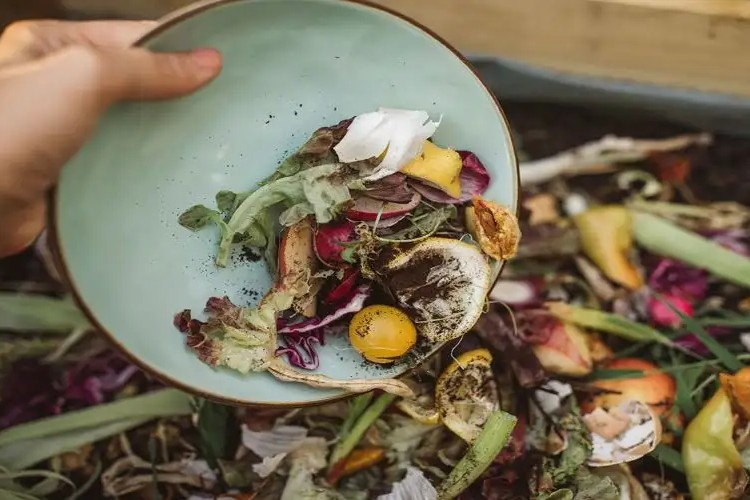
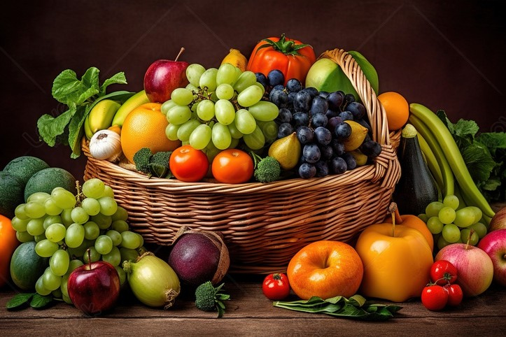
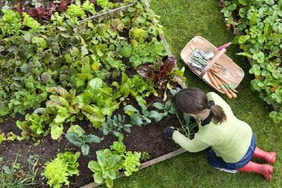
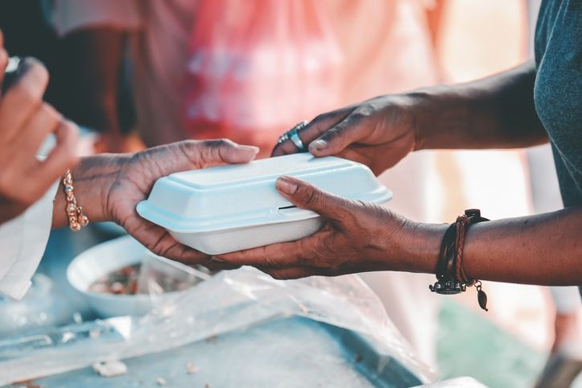
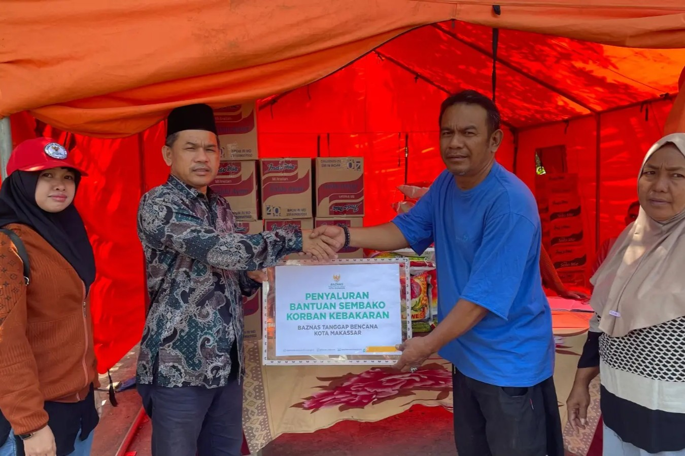
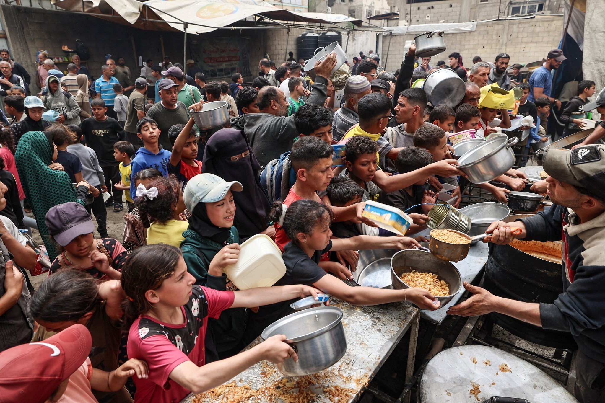
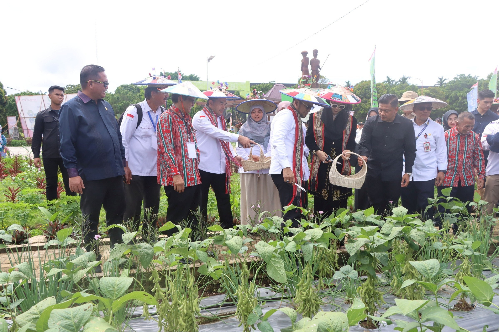

🌱 Aksi yang Bisa Kamu Lakukan 🌱
Bahkan langkah kecilmu bisa membantu mewujudkan dunia tanpa kelaparan.

Kurangi Food Waste 🍽️
Ambil makanan secukupnya dan manfaatkan sisa makanan agar tidak terbuang percuma.

Dukung Produk Lokal 🌾
Beli hasil tani lokal agar petani kecil mendapatkan dukungan ekonomi yang berkelanjutan.

Menanam Sayur di Rumah 🌿
Mulailah dari halaman kecilmu, tanam sayur atau rempah sederhana untuk kebutuhan dapur.

Donasi Pangan 🤝
Bagikan kelebihan makanan atau bantu donasi melalui lembaga pangan terpercaya.
🌍 Gerakan & Komunitas Sosial 🌍
Bergabung dengan komunitas yang memiliki semangat yang sama dalam melawan kelaparan.

Gerakan Pangan Nusantara
Komunitas nasional yang bergerak dalam distribusi pangan untuk wilayah rawan gizi.
Ikut Bergerak

Relawan Anti Lapar
Gerakan anak muda yang menyalurkan makanan sehat ke daerah terpencil.
Ikut Bergerak

Dukung Petani Lokal
Program kolaborasi masyarakat dengan petani untuk mengembangkan pertanian berkelanjutan.
Ikut Bergerak